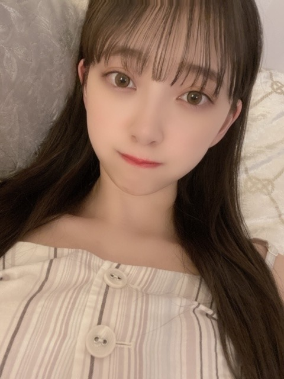
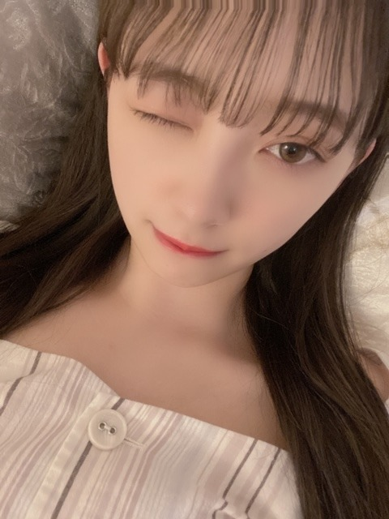
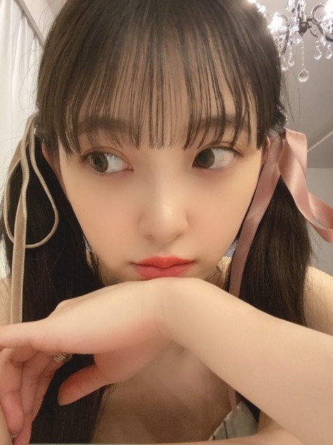

2020/0616Tueおなかすいちゃう

お餅〜
どうもです。
最近は寝る前にゲームをして
本を読んでから寝ています
寝る前は本当はテレビや携帯の光を浴びないほうがいいのですが、つい、してしまいます
荒野行動でこの間、2人倒せたんだけどね
今月中に1回戦で5人倒すのを目標にしてます❤︎
あとはDEANさんのhalfmoon
を聴きながらボーッと月を見たり
結構昼間でも空を見上げてます
天気、空模様、なんか気になる
とりあえず早寝しなきゃ〜
昨日は親友と久しぶりに電話をしました
元気そうで何よりです☺︎
お互い変わらないでいたいな

ちなみにお味噌汁ブームで
赤味噌派、具材はしじみが好き
毎日飲みたいなぁ
ほっこりします。
鍋食べながらお味噌汁飲むのは変ですかね、、？
そして19日から46時間TVが始まりますね〜
いよいよ〜
2期生企画は20日の21:00からです！
ちなみに20日の夜は4期生のまゆちゃんと
MCをやらせていただきます☺︎
頼りないけど頑張ります...>_<...
みなさんも頑張って夜更かしして
見てくださいっ

いろんな髪型。
おやすみ〜
2020/06/16 22:30
コメント(352)
ずっと可愛い！！
４６時間TV楽しみです！！
４６時間TV楽しみです！！
かわいい！(*＞∇＜)ﾉ
はーとです
乃木坂46時間TV楽しみですね！
19日からは大人も子供も、男も女も、乃木坂ファンはみんな夜更かしして楽しもう！！笑
19日からは大人も子供も、男も女も、乃木坂ファンはみんな夜更かしして楽しもう！！笑
司会ガンバってー
必ず見るよ
必ず見るよ
未央奈ブログ更新(*´˘`*)Thanks❣❣
俺はお味噌汁白味噌派だなぁ具材は油揚げがすきぃ
寝る前にスマホの光見ちゃうの(´・д・｀)ﾜｶﾙﾜｧ
(*˘︶˘*)ｵﾔｽﾐ~｡.:*♡
俺はお味噌汁白味噌派だなぁ具材は油揚げがすきぃ
寝る前にスマホの光見ちゃうの(´・д・｀)ﾜｶﾙﾜｧ
(*˘︶˘*)ｵﾔｽﾐ~｡.:*♡
更新ありがとう❤
写真かわいい～
リボン似合ってる～
僕は玉ねぎの味噌汁が好きです。あと大根も好きです。
最近暑いですね。
体調気をつけてね。
写真かわいい～
リボン似合ってる～
僕は玉ねぎの味噌汁が好きです。あと大根も好きです。
最近暑いですね。
体調気をつけてね。
髪伸びたね！可愛いよ！
ブログ更新ありがとう
部屋着？ の未央奈ちゃん可愛いですね
荒野行動やってはないけど知ってる！頑張れ！
46時間TV楽しみにしてます！！！
部屋着？ の未央奈ちゃん可愛いですね
荒野行動やってはないけど知ってる！頑張れ！
46時間TV楽しみにしてます！！！
堀ちゃん、ブログ更新ありがとう！
お餅～
寝る前にテレビや携帯見ない方が良いって言いますよね
でも正直難しいですよね
ゲームはよくわかりませんが、目標に向かって頑張ってください
最近天気があんまり良くなかったんで空見てないです
明日にでも見てみようと思います
味噌汁最近飲んでないので僕も飲もうかと思います
実家に居たときは、僕も鍋と一緒に味噌汁食べてましたよ
46時間TVも楽しみですね
2期生企画、電視台、MCと大変かと思いますが、楽しんでくださいね
いろんな写真ありがとうございますね
またの更新楽しみにしています
お餅～
寝る前にテレビや携帯見ない方が良いって言いますよね
でも正直難しいですよね
ゲームはよくわかりませんが、目標に向かって頑張ってください
最近天気があんまり良くなかったんで空見てないです
明日にでも見てみようと思います
味噌汁最近飲んでないので僕も飲もうかと思います
実家に居たときは、僕も鍋と一緒に味噌汁食べてましたよ
46時間TVも楽しみですね
2期生企画、電視台、MCと大変かと思いますが、楽しんでくださいね
いろんな写真ありがとうございますね
またの更新楽しみにしています
未央奈ちゃん ブログ更新ありがとう
私も空見るの好きです。心が浄化されていく気がする…あと、ちょっと落ち込んだことがあっても空を見ると乃木坂のみんなや未央奈ちゃんが『大丈夫だよ』って言ってくれている気がします笑それに未央奈ちゃんを見てると安心するし、笑顔になれます。46時間TV、テスト期間と被ってるけど合間にできるだけみるね！体調には十分気をつけて頑張ってください、楽しみにしてます いつもありがとう。今日も大好きです。おやすみなさい。
いつもありがとう。今日も大好きです。おやすみなさい。
私も空見るの好きです。心が浄化されていく気がする…あと、ちょっと落ち込んだことがあっても空を見ると乃木坂のみんなや未央奈ちゃんが『大丈夫だよ』って言ってくれている気がします笑それに未央奈ちゃんを見てると安心するし、笑顔になれます。46時間TV、テスト期間と被ってるけど合間にできるだけみるね！体調には十分気をつけて頑張ってください、楽しみにしてます
未央奈ブログ更新ありがとー！
俺はYouTubeみて眠くなったら寝るかな！
最近はパニックアットザディスコのhigh hopes聞いてる！
もやしみ
ではは
俺はYouTubeみて眠くなったら寝るかな！
最近はパニックアットザディスコのhigh hopes聞いてる！
もやしみ
ではは
最近なんだか憂鬱なので、
46時間TVとっても楽しみにしてます～！
頑張ってください！！笑っ
46時間TVとっても楽しみにしてます～！
頑張ってください！！笑っ
堀未央奈❤こんばんは❗毎日、寝る前にゲームしたり本読んだりして寝ているんだね(^o^)
未央奈❤色んな髪型にしても可愛いね(*^^*)
味噌汁は、美味しいよね(^o^)俺は、毎日、２杯飲んでるよ。
未央奈❤鍋食べるなら味噌汁は、要らないと思うよ。
乃木坂46時間テレビでMCやるんだね。頑張ってね(^o^)v
長野県は、放送されないから観れないよ(T_T)
まだ東京は、コロナ出ているから気を付けてね。これからも体調に気を付けて頑張ってね(^o^)v応援しているからね(^o^)
今日も未央奈可愛いね(*^^*)大好き❤愛してる ♥❤
おやすみ(-.-)Zzz・・・・未央奈（*⌒３⌒*）またね(*^^*)
未央奈❤色んな髪型にしても可愛いね(*^^*)
味噌汁は、美味しいよね(^o^)俺は、毎日、２杯飲んでるよ。
未央奈❤鍋食べるなら味噌汁は、要らないと思うよ。
乃木坂46時間テレビでMCやるんだね。頑張ってね(^o^)v
長野県は、放送されないから観れないよ(T_T)
まだ東京は、コロナ出ているから気を付けてね。これからも体調に気を付けて頑張ってね(^o^)v応援しているからね(^o^)
今日も未央奈可愛いね(*^^*)大好き❤愛してる ♥❤
おやすみ(-.-)Zzz・・・・未央奈（*⌒３⌒*）またね(*^^*)
可愛いー！
MC頑張って
健康第一ですよー！
MC頑張って
健康第一ですよー！
ブログ更新ありがとう
インスタに続いてブログまで可愛い全開だ…！心臓もたない笑
更新ありがとう！
良くないって分かっていてもつい寝る前に携帯見ちゃうよね…
荒野行動の目標が達成できますように︎☺︎
お味噌汁とお鍋を一緒にって初めて聞いた！笑
どっちも大好きだけどお腹タプタプになりそう笑
46時間TV本当に本当に楽しみ！
電視台と2期生の修学旅行企画とレコメンコンビのMCの間は絶対リアタイするね！体調に気をつけて頑張ってね︎⸜(*ˊᵕˋ*)⸝
更新ありがとう！
良くないって分かっていてもつい寝る前に携帯見ちゃうよね…
荒野行動の目標が達成できますように︎☺︎
お味噌汁とお鍋を一緒にって初めて聞いた！笑
どっちも大好きだけどお腹タプタプになりそう笑
46時間TV本当に本当に楽しみ！
電視台と2期生の修学旅行企画とレコメンコンビのMCの間は絶対リアタイするね！体調に気をつけて頑張ってね︎⸜(*ˊᵕˋ*)⸝
可愛いです
お餅～？？？
どうもです。
結構長時間ゲームとかするようなら、ブルーライトカットのメガネ使うといいと思うよ～
昨日購入したんだけど、目の疲れは少し和らいでいるようなそうでもないような……
本当に長時間見続けないと効果を実感することはなかなか難しいかもしれないけど、40％もカットしてくれるのはありがたいよね～
今日の空(昼)綺麗だったね～
ここのところ、雨の日が多かったからかな？
青空が気持ちよかった
味噌汁いいね～
しじみの味噌汁はうまい！間違いない！
あと、個人的になめこの味噌汁も好きだな～
あと、豆腐は必須！
46時間TVは2期生コーナーを一番楽しみにしています
絶対見るよ～
おやすみ～
って、このコメント見るの朝かもしれないな(笑)
では
どうもです。
結構長時間ゲームとかするようなら、ブルーライトカットのメガネ使うといいと思うよ～
昨日購入したんだけど、目の疲れは少し和らいでいるようなそうでもないような……
本当に長時間見続けないと効果を実感することはなかなか難しいかもしれないけど、40％もカットしてくれるのはありがたいよね～
今日の空(昼)綺麗だったね～
ここのところ、雨の日が多かったからかな？
青空が気持ちよかった
味噌汁いいね～
しじみの味噌汁はうまい！間違いない！
あと、個人的になめこの味噌汁も好きだな～
あと、豆腐は必須！
46時間TVは2期生コーナーを一番楽しみにしています
絶対見るよ～
おやすみ～
って、このコメント見るの朝かもしれないな(笑)
では
未央奈ちゃんブログ更新ありがとう！！
今日はすごく暑かったですね(；；)
熱中症に気をつけてください、！！
色々な髪型かわいすぎます！ボブももちろん好きだけどロングだと色々なアレンジが見れるので見ていて楽しいです！
モバメで告知してくれてた46時間テレビのMCたのしみです！
レコメンのパーソナリティ同士だからノリさんとのエピソードも聞けたりするのかな、、？？？
まゆちゃんと未央奈ちゃんの会話が面白くて大好きなのでトーク楽しみにしています！頑張ってください！
最近はもっぱらテストだらけで辛いです(；；)
でもがんばりますー！！
いつもありがとうございます
だいすき！
今日はすごく暑かったですね(；；)
熱中症に気をつけてください、！！
色々な髪型かわいすぎます！ボブももちろん好きだけどロングだと色々なアレンジが見れるので見ていて楽しいです！
モバメで告知してくれてた46時間テレビのMCたのしみです！
レコメンのパーソナリティ同士だからノリさんとのエピソードも聞けたりするのかな、、？？？
まゆちゃんと未央奈ちゃんの会話が面白くて大好きなのでトーク楽しみにしています！頑張ってください！
最近はもっぱらテストだらけで辛いです(；；)
でもがんばりますー！！
いつもありがとうございます
だいすき！
いろんなみおなが、みれてうれしいよおやすみなさい
私はお味噌汁が好きなので、何とでも合わせますよ。
可愛い〜〜！！！
46時間TV楽しみです
レコメンコンビでの司会ですね
レコメンでの共演でも相性が良さげだったので期待してるよ
2期生企画も絶対に見ます
鍋を食べながらのお味噌汁はアリだと思いますよ
レコメンコンビでの司会ですね
レコメンでの共演でも相性が良さげだったので期待してるよ
2期生企画も絶対に見ます
鍋を食べながらのお味噌汁はアリだと思いますよ
やっぱ好きです、最高です
未央奈ブログ更新ありがとう！
僕も夜寝る前についついゲームしてしまいます(>_<)
この頃は気付いたら夜中の3時とかになってます笑
気をつけないと（泣）
今週はいよいよ46時間TVだね！
二期生企画楽しみだなぁ〜！
早く未央奈に会いたい〜！
46時間でも髪型色々変えたりするのかな？
まゆたんとのMCとかも楽しみにしてるね(^^)
僕は夜更かし準備の為エナジードリンク箱買いしました笑
出来るだけ起きれるように頑張ります٩( 'ω' )و
未央奈も体調に気をつけながら頑張ってね！
46時間TVも次のブログも楽しみに待ってます！
僕も夜寝る前についついゲームしてしまいます(>_<)
この頃は気付いたら夜中の3時とかになってます笑
気をつけないと（泣）
今週はいよいよ46時間TVだね！
二期生企画楽しみだなぁ〜！
早く未央奈に会いたい〜！
46時間でも髪型色々変えたりするのかな？
まゆたんとのMCとかも楽しみにしてるね(^^)
僕は夜更かし準備の為エナジードリンク箱買いしました笑
出来るだけ起きれるように頑張ります٩( 'ω' )و
未央奈も体調に気をつけながら頑張ってね！
46時間TVも次のブログも楽しみに待ってます！
こんばんは。
46時間TVのMC頑張ってくださいね。
楽しみにしています。
見ます。
46時間TVのMC頑張ってくださいね。
楽しみにしています。
見ます。
未央奈ちゃんこんばんは。今日もカワイくもあり美しくもある写真をたくさんありがとう。なんか、おうち感が出ててホッコリするね。
いよいよ金曜からは46時間ＴＶですね。2期生企画も電視台も楽しみだし、今日発表されてたけど田村真佑ちゃんとの新旧レコメンパーソナリティ2人によるｍｃもとっても楽しみです。コンビ組むのが4期生の真佑ちゃんってことは、未央奈ちゃんのお姉さんっぷりが見れるのかな(笑)
さすがに46時間起きっぱなしはオジサンには体力的にきついですが、なるべくたくさんの時間を共有出来たらなって思ってます。
いよいよ金曜からは46時間ＴＶですね。2期生企画も電視台も楽しみだし、今日発表されてたけど田村真佑ちゃんとの新旧レコメンパーソナリティ2人によるｍｃもとっても楽しみです。コンビ組むのが4期生の真佑ちゃんってことは、未央奈ちゃんのお姉さんっぷりが見れるのかな(笑)
さすがに46時間起きっぱなしはオジサンには体力的にきついですが、なるべくたくさんの時間を共有出来たらなって思ってます。
みおちゃんブログありがと♡
46時間TV、いよいよ金曜日からだね。
土日は仕事お休みにしたので、気合い入れて観るね。
めちゃんこ楽しみ！
46時間TV、いよいよ金曜日からだね。
土日は仕事お休みにしたので、気合い入れて観るね。
めちゃんこ楽しみ！
未央奈ちゃんブログ更新ありがとう！
46時間tv楽しみに待ってます‼️(*´∀｀)ノ
緊張するかも知れないけど、いつも通りの未央奈で頑張ってねーー！
おやすみ ✨
46時間tv楽しみに待ってます‼️(*´∀｀)ノ
緊張するかも知れないけど、いつも通りの未央奈で頑張ってねーー！
おやすみ ✨
お疲れ様です！
暑い時期の味噌汁もいいですよね！自分は具がキャベツと油揚げが好きです！それと白味噌派ですね笑
未央奈さんが荒野行動って前もやってるってblogで書いてましたけどちょっと意外だなーって思います！マッチング出来たらいいんですけどね笑
それと質問で高校で初めての友達が何人も出来たんですが会話を続けさせるにはどうすればいいですか？？ さりげなく話せるテクニックみたいなのがあれば知りたいです！！
最後に46時間テレビ楽しみにしてますね！
暑い時期の味噌汁もいいですよね！自分は具がキャベツと油揚げが好きです！それと白味噌派ですね笑
未央奈さんが荒野行動って前もやってるってblogで書いてましたけどちょっと意外だなーって思います！マッチング出来たらいいんですけどね笑
それと質問で高校で初めての友達が何人も出来たんですが会話を続けさせるにはどうすればいいですか？？ さりげなく話せるテクニックみたいなのがあれば知りたいです！！
最後に46時間テレビ楽しみにしてますね！
地元のお友達と電話したのかぁ！学生時代、特に高校時代の友達って大人になってからも1番仲良くなる気がする笑笑 ずっと大切にしたいよね！46時間テレビめちゃくちゃ楽しみすぎる！特に2期生企画の修学旅行の夜と、まゆちゃんと堀ちゃんのレコメンコンビのMC楽しみだなぁ笑笑 いろんな髪型してくれてめちゃくちゃ嬉しい！ツインテール好きだなぁ、ニューカレドニアの時の夜の髪型みたい！！大好きです！！
ももんが
ももんが
未央奈ちゃんこんばんはー
今日、2nd写真購入させていただきました！
未央奈ちゃんらしさが1冊に詰め込まれていて、読み進めるにつれて写真集の世界観に引き込まれていきました！
これからも応援してます！
今日、2nd写真購入させていただきました！
未央奈ちゃんらしさが1冊に詰め込まれていて、読み進めるにつれて写真集の世界観に引き込まれていきました！
これからも応援してます！
ブログ更新ありがと〜！
どの未央奈ちゃんも可愛すぎるよ！
46時間TV楽しみすぎる♡未央奈ちゃんのMCどきどきわくわく〜〜
どの未央奈ちゃんも可愛すぎるよ！
46時間TV楽しみすぎる♡未央奈ちゃんのMCどきどきわくわく〜〜
今日もブログありがと〜！
お餅〜
堀ちゃんが荒野行動をやってるとは！僕も前やってたけど1回で2人倒すのが精一杯でした。強い友達頼り！
46時間テレビがいよいよ迫ってきてほんとに楽しみです！堀ちゃんのMCもめちゃんこ楽しみだー！！まゆちゃんとやるということで先輩力？を見れるのを楽しみにしてます笑
【今日の推し307】part7
p.36~37
･天使ゾーン突入もはや羽が見える
･スタイルめちゃいい
p.38
･この甘い雰囲気好き
･ちょっとなーちゃんぽいかもとも思いました
･とにかく守りたくなる
お餅〜
堀ちゃんが荒野行動をやってるとは！僕も前やってたけど1回で2人倒すのが精一杯でした。強い友達頼り！
46時間テレビがいよいよ迫ってきてほんとに楽しみです！堀ちゃんのMCもめちゃんこ楽しみだー！！まゆちゃんとやるということで先輩力？を見れるのを楽しみにしてます笑
【今日の推し307】part7
p.36~37
･天使ゾーン突入もはや羽が見える
･スタイルめちゃいい
p.38
･この甘い雰囲気好き
･ちょっとなーちゃんぽいかもとも思いました
･とにかく守りたくなる
46時間TV楽しみにしてます！
堀ちゃん、デコ出し似合うね‼️大人っぽく見えるよ✨46時間テレビ楽しみにお待ちしています(^-^)
トルティーヤ君にも会いたいな～
トルティーヤ君にも会いたいな～
46時間TVいよいよ始まるね！
まゆちゃんとのMCも楽しみだし2期生の企画も楽しみ✨
頑張って夜更かしするね 色んな髪型を見せてくれてありがとう。
どんな未央奈ちゃんも好きだよ〜
まゆちゃんとのMCも楽しみだし2期生の企画も楽しみ✨
頑張って夜更かしするね 色んな髪型を見せてくれてありがとう。
どんな未央奈ちゃんも好きだよ〜
ブログ更新ありがと！
最近は乃木坂のブログが毎日の楽しみです
荒野行動やってるんだね
僕もクソだからあれだけど1回で5人って結構すごいと思うよ
毎日やってるんだけど全く進歩しない
頑張らなきゃ
武器何使ってるの？
ぜひ教えてください
次も楽しみにしてます
バイバイっ
最近は乃木坂のブログが毎日の楽しみです
荒野行動やってるんだね
僕もクソだからあれだけど1回で5人って結構すごいと思うよ
毎日やってるんだけど全く進歩しない
頑張らなきゃ
武器何使ってるの？
ぜひ教えてください
次も楽しみにしてます
バイバイっ
寝っ転がって写真撮ってる？
お家感があっていいね。
元気が一番。元気があれば何でも出来る。
おなかすくのも元気な証拠。
味噌は元々大豆だし、しかも発酵食品。
体にいいね。
シャンデリアの前でいろんな髪型して。
お嬢様じゃん。
お家感があっていいね。
元気が一番。元気があれば何でも出来る。
おなかすくのも元気な証拠。
味噌は元々大豆だし、しかも発酵食品。
体にいいね。
シャンデリアの前でいろんな髪型して。
お嬢様じゃん。
堀さん今日もお綺麗です！
ﾌｫｫｵｫｵｵｵｱｱｱｧｧｧｧｧ＼(＾∀＾)／ｨｪｴｴｱｱｱ!!!
未央奈最高だーーーーーー！最高に可愛いぞーーーー！
鍋と一緒に味噌汁は変だと思ーう！ただし、豆乳鍋と一緒に味噌汁なら合うかもしれないですね、。大豆と大豆で相性良さそう！
荒野行動は、どれだけマップを知り尽くしてるかで相手の立ち回りとかを予測したりできるので頑張ってー！
じゃ！じゃ！じゃ！
ﾌｫｫｵｫｵｵｵｱｱｱｧｧｧｧｧ＼(＾∀＾)／ｨｪｴｴｱｱｱ!!!
未央奈最高だーーーーーー！最高に可愛いぞーーーー！
鍋と一緒に味噌汁は変だと思ーう！ただし、豆乳鍋と一緒に味噌汁なら合うかもしれないですね、。大豆と大豆で相性良さそう！
荒野行動は、どれだけマップを知り尽くしてるかで相手の立ち回りとかを予測したりできるので頑張ってー！
じゃ！じゃ！じゃ！
荒野行動僕もやってます！
皆強くてなかなか倒せなくて、でもね頑張って5人ギリギリ倒せたよ！
未央奈ちゃんも倒せたら教えてね！
皆強くてなかなか倒せなくて、でもね頑張って5人ギリギリ倒せたよ！
未央奈ちゃんも倒せたら教えてね！
未央奈ブログ更新ありがとう
お鍋の時にお味噌汁飲むのは変じゃないと思うよ‼️
46時間テレビ全部見ます！(起きれていられる自信ないけど)
未央奈も頑張ってね
お鍋の時にお味噌汁飲むのは変じゃないと思うよ‼️
46時間テレビ全部見ます！(起きれていられる自信ないけど)
未央奈も頑張ってね
ブログありがとう！
いつも読んでます
いつも読んでます
世界的に厳しい状況ですが頑張ってください！
未央奈〜
エクステつけてるの？可愛い 未央奈ちゃんの歌番組の度に幅広くヘアアレンジしてくれるの大好きです！この中だとロングツイン可愛すぎる
私もおみそ汁好きだよ〜しじみも好き！けどお鍋と一緒には飲まないかな なんかお腹たぷたぷになりそう笑
46時間TV楽しみ！それまでに課題をためないように頑張ります！2期生の修学旅行の夜楽しみすぎる！とにかくそれは優先順位の1番！！
まゆちゃんとのMCも楽しみ！未央奈ちゃんの先輩っぽいところが見れるのも期待してる！
未央奈ちゃんおやすみ
エクステつけてるの？可愛い 未央奈ちゃんの歌番組の度に幅広くヘアアレンジしてくれるの大好きです！この中だとロングツイン可愛すぎる
私もおみそ汁好きだよ〜しじみも好き！けどお鍋と一緒には飲まないかな なんかお腹たぷたぷになりそう笑
46時間TV楽しみ！それまでに課題をためないように頑張ります！2期生の修学旅行の夜楽しみすぎる！とにかくそれは優先順位の1番！！
まゆちゃんとのMCも楽しみ！未央奈ちゃんの先輩っぽいところが見れるのも期待してる！
未央奈ちゃんおやすみ
ブログ更新ありがとう!!
写真集買いましたよ!（遅くなりました）
めっちゃ良かったです（何回もみてます）
味噌汁の好きな具材一緒です!!
halfmoonいい曲ですよね!
46時間テレビもこれからの
未央奈ちゃんも楽しみです!!!
ばいばーい
写真集買いましたよ!（遅くなりました）
めっちゃ良かったです（何回もみてます）
味噌汁の好きな具材一緒です!!
halfmoonいい曲ですよね!
46時間テレビもこれからの
未央奈ちゃんも楽しみです!!!
ばいばーい
はしくんが見たいです。
未央奈さん可愛いんじゃ〜
最近は寝る前にホラー映画の一部を見て荒野行動してから寝ています。
ホラー映画見てから寝ようとすると寝れなくなってしまうのですが荒野行動をすることによって寝れるようになります。
荒野行動では今日奇跡的に7人倒しました！！（団体競技場 ）びっくりしました。ちなみに荒野行動でもななままという名前ですねこの名前適当につけたのに結構愛着湧いてます 笑
味噌汁ブーム俺にも来ています味噌汁にしじみ美味しいですよね！！たまらん！
お鍋に味噌汁俺も用意しますよ？未央奈さんは変じゃないです！大丈夫です！
46時間テレビ楽しみです！エナジードリンクを飲んで頑張って耐えてみます！
またコロナが流行ってきたので体調にはお気を付けください。
お仕事頑張ってください
中3の乃木坂ファンでした。
未央奈さん大大大好きです！可愛いー！！
最近は寝る前にホラー映画の一部を見て荒野行動してから寝ています。
ホラー映画見てから寝ようとすると寝れなくなってしまうのですが荒野行動をすることによって寝れるようになります。
荒野行動では今日奇跡的に7人倒しました！！（団体競技場 ）びっくりしました。ちなみに荒野行動でもななままという名前ですねこの名前適当につけたのに結構愛着湧いてます 笑
味噌汁ブーム俺にも来ています味噌汁にしじみ美味しいですよね！！たまらん！
お鍋に味噌汁俺も用意しますよ？未央奈さんは変じゃないです！大丈夫です！
46時間テレビ楽しみです！エナジードリンクを飲んで頑張って耐えてみます！
またコロナが流行ってきたので体調にはお気を付けください。
お仕事頑張ってください
中3の乃木坂ファンでした。
未央奈さん大大大好きです！可愛いー！！


何使ってるの？？